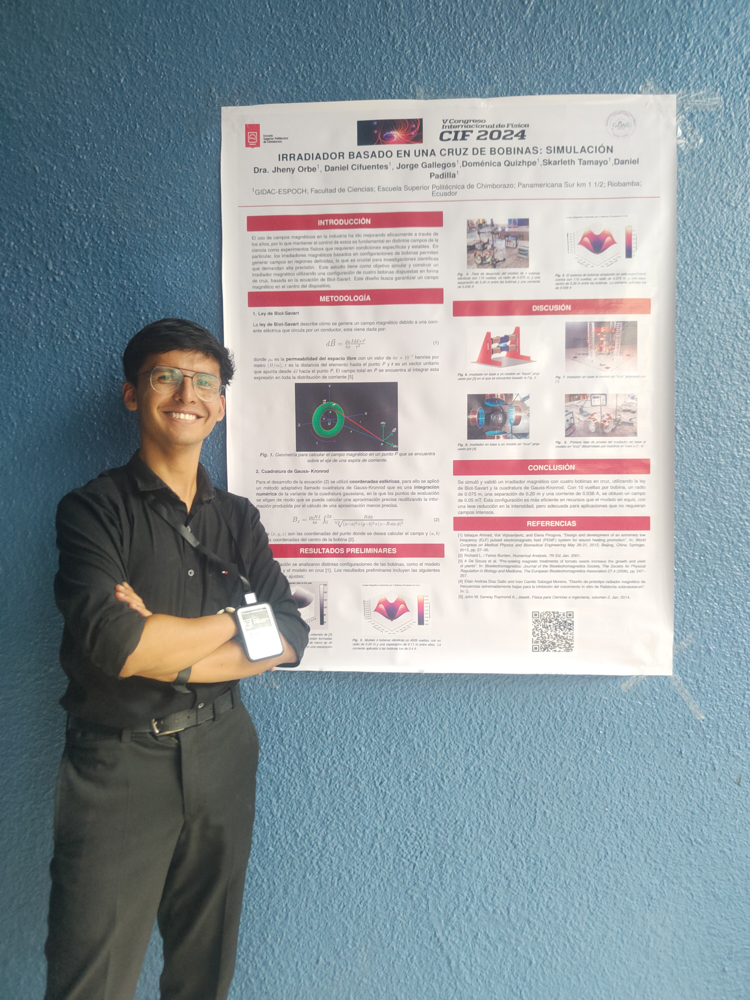

∇
General Relativity
Einstein equations, exact solutions and compact spacetimes.



 FIELD NOTES / RESEARCH & OUTREACH
FIELD NOTES / RESEARCH & OUTREACHPHYSICIST · MSc ASTRONOMY · ELTE
Exploring relativistic gravity, compact objects and the computational methods that connect theory with observation.
01 / EXPERTISE
Einstein equations, exact solutions and compact spacetimes.
Anisotropic matter, stability, causality and energy conditions.
MGD/MGDe methods and additional gravitational sources.
Numerical solvers, simulation, GPU methods and reproducible analysis.
02 / PORTFOLIO
PROJECT / 01
Coupled relativistic fluids, stability, causality and energy exchange.
PROJECT / 02
Finite-element and GPU-based simulations of Helmholtz and crossed-coil configurations.
PROJECT / 03
Satellite-data visualization for climate resilience and education.
PROJECT / 04
Immersive 3D astronomy education using NASA exoplanet data.
03 / HIGHLIGHTS